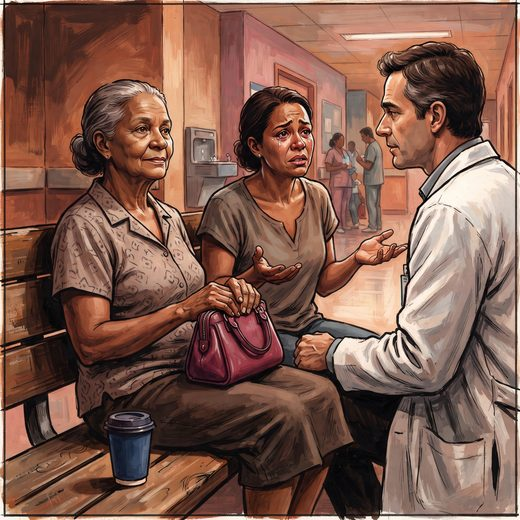

Consulta rápida à beira do leito
Condutas, doses e interações.
Referências da aula · 3
- Serrano-Pozo A, Escott-Price V, Grinberg LT, Pascoal T, Suárez-Calvet M, Dubois B, et al. Alzheimer's disease. Lancet. 2026;407:2241-62. PMID 42208565. doi:10.1016/S0140-6736(26)00198-4.PubMedDOI
- Schilling LP, Balthazar MLF, Radanovic M, Forlenza OV, Silagi ML, Smid J, et al. Diagnóstico da doença de Alzheimer: recomendações do Departamento Científico de Neurologia Cognitiva e do Envelhecimento da Academia Brasileira de Neurologia. Dement Neuropsychol. 2022;16(3 Suppl 1):25-39. PMID 36533157. doi:10.1590/1980-5764-DN-2022-S102PT.PubMedDOI
- Livingston G, Huntley J, Liu KY, et al. Dementia prevention, intervention, and care: 2024 report of the Lancet standing Commission. Lancet. 2024;404:572-628. PMID 39096926. doi:10.1016/S0140-6736(24)01296-0.PubMedDOI
Documentos oficiais
Leis e publicações do Ministério da Saúde sobre o cuidado da pessoa idosa, de acesso livre.
Abrir os documentos